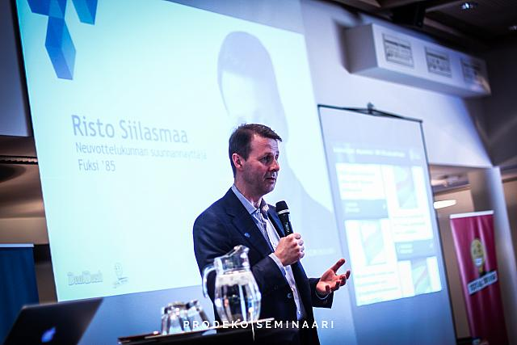
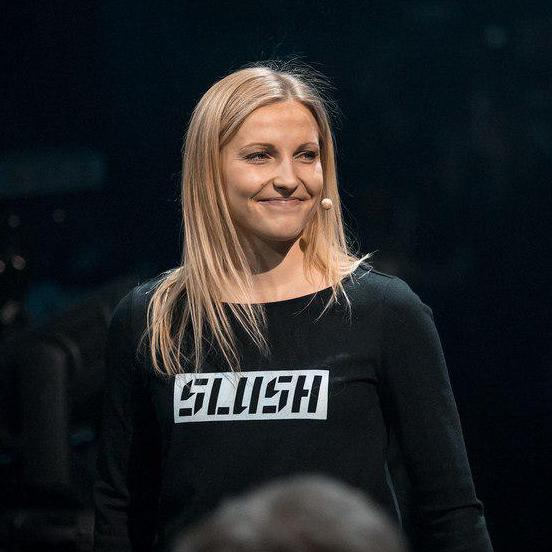
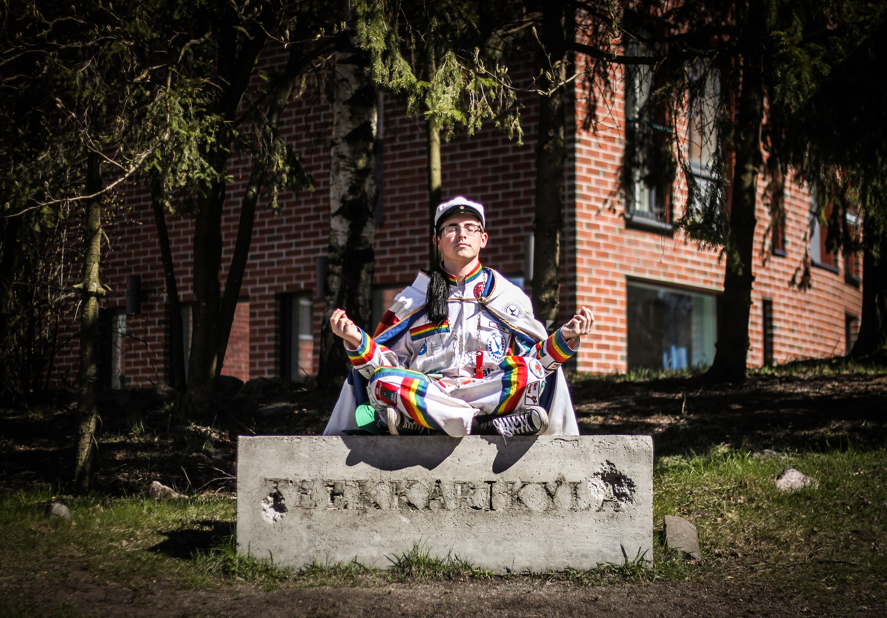
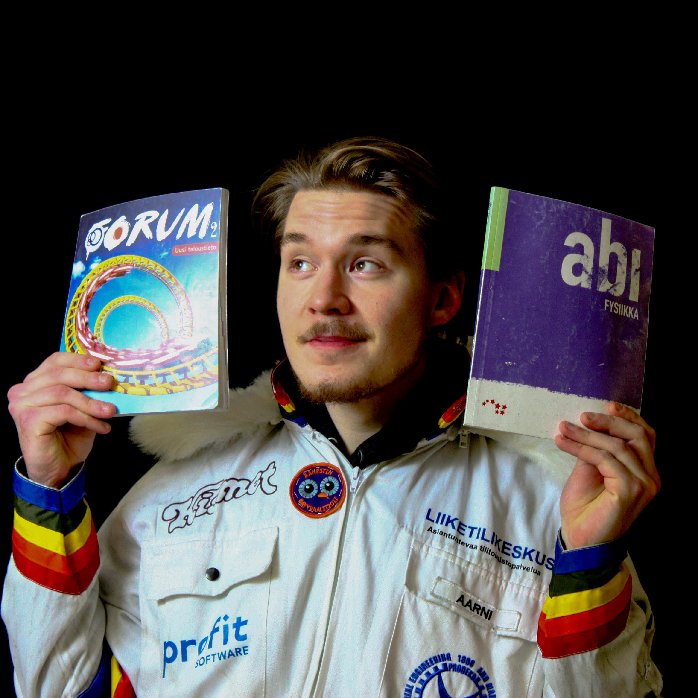
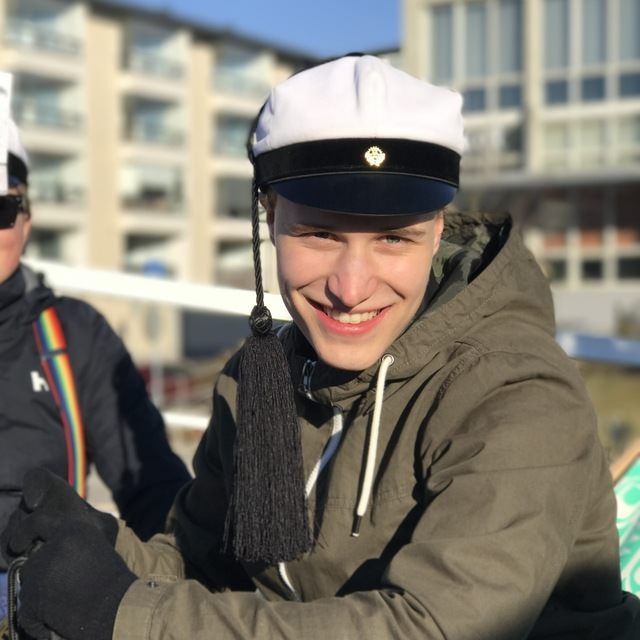
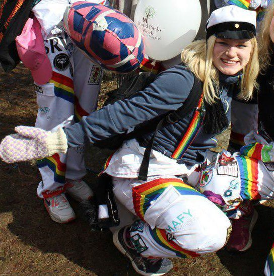
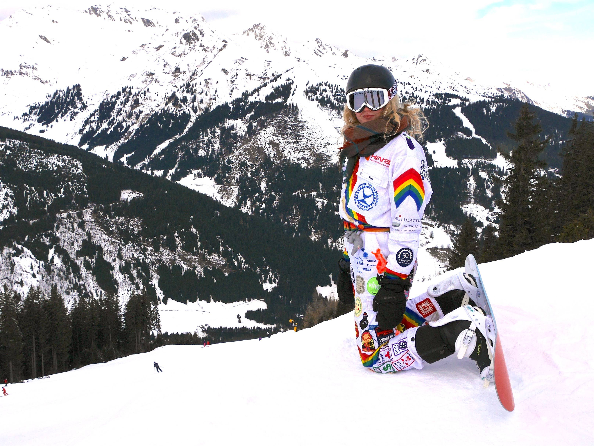

Opinnot
Tuotantotaloudessa nimen mukaisesti tarkastellaan yrityksen taloudellista ja tuotannollista toimintaa. Se on siis uniikki yhdistelmä kauppatieteitä ja tekniikkaa tarvoitteena kehittää yrityksen johdon toimintaa kaikilla osa-alueilla sellaiseksi, joka mahdollistaa menestyksen nyt ja tulevaisuudessa. Aalto-yliopistossa painotus on erityisesti nykyaikaisessa, teknologiapohjaisessa liiketoiminnassa ja ihmisten johtamisessa. Myös suomen parhaat yrittäjyysopinnot ovat tarjolla aiheesta kiinnostuneille. Opetukseen sisältyy paitsi yritysten kannalta tärkeitä opintoja, kuten strategian muodostamista, tuotannon suunnittelua, tuotekehitystä ja laskentatoimea, myös henkilökohtaista johtajuutta kehittäviä opintoja ihmisten motivoinnista ja potentiaalin hyödyntämisestä.
Yliopiston tarkemman kuvauksen opetuksen sisällöstä ja opittavista taidoista voi lukea tämän linkin takaa.
Käytännön opintoihin sisältyy paljon yritysyhteistyötä ja monilla kursseilla heti opintojen alkuvaiheessa opiskelijat pääsevät tekemään yritysprojekteja osana kursseja, mikä sekä opettaa käytännön taitoja, että helpottaa kesätyöpaikkojen löytämistä. Yritysprojektit tehdään ryhmissä, joten suuri osa opiskelusta tapahtuukin yhdessä muiden kanssa, mikä paitsi takaa tiiviin opiskelijayhteisön, myös opettaa tärkeitä yhteistyötaitoja elämää varten. Lisäksi ryhmätöitä on mukava tehdä, sillä tuotantotalouden opiskelijat ovat ahkeria ja kunnianhimoisia - Aallon tuotantotalous on jo pitkään ollut teknisistä aloista se, jolle on haastavinta päästä sisään. Kursseja käydään sekä suomeksi että englanniksi, englannin kielen määrä kasvaa opintojen edetessä. Lisäksi on mahdollista opiskella Ruotsiksi. Oman kielitaidon riittävyyttä opiskeluun ei tarvitse pelätä, se kasvaa juuri sopivassa tahdissa opintojen edetessä!
Opintojen lisäksi Aallon tuotantotaloudella on yksi Suomen vahvimmista, ellei vahvin, alumnien eli jo valmistuneiden opiskelijoiden verkosto. Tämä näkyy esimerkiksi järjestettävänä mentorointitoimintana. Aallon tuotantotaloudelta valmistuneilla on käytännössä täystyöllisyys. Tämän vuoksi jo opiskeluaikana on helppo löytää oman alan töitä. Yritykset myös järjestävät opiskelijoille runsaasti yritysesittelyitä. Vaikka Aallon tuotantotalouden laitoksen tarjoamat opinnot ja tekemä tutkimus on itsessään jo huippuluokkaa, antaa opiskelijoiden, alumnien ja yritysten välinen tiivis yhteistyö opiskelijoille mahdollisuuden oppia ja kokea paljon sellaista, mitä kursseilla ei voida opettaa. Tämä onkin yksi keskeisistä syistä, miksi juuri Aallon tuotantotalouden alumnit ovat selkeästi yliedustettuina Suomen liike-elämän huipulla ottaen huomioon, että kautta aikain valmistuneita on alle 2500 henkilöä. Tuotantotalouden opiskelu Aalto-yliopistossa valmentaakin menestykseen sekä opintojen että tiiviin yhteisön kautta.
Tuotantotalouden valmistuneet työllistyvät asiantuntija- ja johtotehtäviin, kuten:
- liikkeenjohdon konsultti
- talousjohtaja
- operatiivinen johtaja
- projektipäällikkö
- henkilöstöpäällikkö
- toimitusjohtaja
- myyntijohtaja
- markkinointipäällikkö
- tuotannon suunnittelija
- laatujohtaja
- tuotekehityspäällikkö
- investointipankkiiri
- yrittäjä
- pääomasijoittamisen asiantuntijatehtävät

Opiskelijaelämä
Opiskelijaelämä on elämän parasta aikaa ja Otaniemessä on loputon määrä mahdollisuuksia käyttää tätä aikaa. Kaikki on mahdollista, halusitpa sitten harrastaa laskuvarjohyppimistä, purjehtimista, musiikkia, urheilua, näyttelemistä tai yrittäjyyttä! Otaniemi tarjoaa kaiken erilaisten yhdistysten, järjestöjen ja kiltojen kautta. Yhdistykset ja järjestöt järjestävät toimintaa liittyen tiettyyn tekemiseen ja killat taas lähtökohtaisesti oman opiskelualansa opiskelijoille. Jokaisella opiskelualalla on oma kiltansa ja Aallon tuotantotalouden killan nimi on Prodeko.
Tuotantotalouden opiskelijat napataan heti mukaan toimintaan. Ensimmäisen vuoden opiskelijat eli fuksit pääsevät syksynä järjestämään omat opiskelijabileet, suunnittelemaan täysin omat haalarinsa ja järjestämään itse suuren kansainvälisen tapahtuman. Tämän lisäksi Prodeko järjestää paljon tapahtumia vuoden varrella tuotantotalouden opiskelijoille aina sitseistä (opiskelijatyyliset bileet) excuihin (yritysvierailuihin). Excuja on vuosittain noin 60 kpl, eli keskimäärin joka viikko on vähintään yksi yritysvierailu. Näillä yritysvierailuilla yritykset tutustuttavat meitä heidän toimintaansa yleensä hyvän ohjelman, ruuan tai juoman puitteissa.
Kun organisointi, bilettäminen tai yritysvierailut alkavat väsyttämään on aika suunnata kohti kiltahuonetta. Kiltahuoneella Prodekolaiset voivat hengailla, pelata biljardia tai katsella telkkaria. Kiltahuoneen vieressä on käytössämme kuntosali ja opiskelutila, jossa voi rauhallisemmin opiskella. Kiltahuoneen läheisyydessä on mukava hengailla oman vuosikurssinsa kanssa tai tutustua vanhempiin kiltalaisiin. Jokainen täällä tuntee toisensa!

Menestyneitä tutalaisia
THINK BIG
”Tuotantotalouden opintosuunta on paras mahdollinen kasvuyrittäjyyden koulutusohjelma.”
Risto Siilasmaa, Nokian hallituksen puheenjohtaja, F-Securen perustaja, Aallon tuotantotalouden alumni
GET THINGS DONE
”Hain tutalle, koska se vaikutti Suomen parhaalta paikalta yhdistää kiinnostus tekniikkaan, luonnontieteisiin ja talouteen. Vaikka hakiessani en juurikaan tiennyt mihin olen ryhtymässä, jo ensimmäinen viikko tutalla vakuutti. Olin löytänyt kotini. Nyt myöhemmin on helppo huomata tutan ainutlaatuinen arvo.”
Marianne Vikkula, Toimitusjohtaja (Slush Oy), Aallon tuotantotalouden opiskelija
LEARN AND GROW
”Abina minulla ei ollut tarkkaa ideaa mitä haluan tehdä, mutta bisnes kiinnosti yleisesti. Aallon tutalta näytti saavan hyvät verkostot ja uramahdollisuudet kiinnostavissa paikoissa.”
Pasi Lohi, Toimitusjohtaja (Deal Dash Oy), Aallon tuotantotalouden opiskelija
GIVE BACK
”Tuotantotalous oli minulle loistava tapa yhdistää kaupalliset ja tekniset opinnot. Pian opintojen alettua vahvistui käsitykseni siitä, että juuri tätä kautta pystyy omaksumaan riittävän monipuolisen ymmärryksen ratkoakseen tämän hetken suurimpia ongelmia.”
Tuukka Yrttimaa, Toimitusjohtaja (ACE Consulting), Aallon tuotantotalouden opiskelija
BE A GOOD PERSON
”Valitsin tutan, koska haluan ymmärtää maailmaa monipuolisesti ja tutustua muihin rentoihin ja skarppeihin huipputyyppeihin. Prodekolla on läheiset suhteet yritysmaailmaan, mikä näkyy laadukkaina opintoina ja erinomaisina verkostoitumismahdollisuuksina.”
Karla Nieminen, Jäänmurtajat Oy:n perustaja ja ihmissuhdetaitokouluttaja, Aallon tuotantotalouden alumni

Hakeminen
Tuotantotalouden diplomi-insinöörin koulutusohjelmaan haetaan opintopolku.fi -nettisivulla. Diplomi-insinööri -koulutuksen yhteishaku alkaa ke 14.3.2018 klo 8.00 ja päättyy ke 28.3.2018 klo 15.00. Alkupisteiden (ylioppilastodistuksen arvosanojen määrittämät pisteet) perusteella tehtävän valinnan tulokset julkaistaan pe 25.5.2018 klo 12.00. Tuotantotalouden koulutusohjelmaan vaadittavat matematiikan ja fysiikan kokeet järjestetään seuraavasti:
- Matematiikka: ti 29.5.2018 klo 14-17
- Fysiikka: ke 30.5.2018 klo 14-18
Alkupistevalinnassa valittujen hakijoiden ei tarvitse osallistua kyseisiin kokeisiin. Yhteishaun tulokset julkaistaan opintopolussa to 28.6.2018 ja opiskelupaikka on otettava vastaan viimeistään ti 10.7.2018 klo 15.00.

Tärkeitä linkkejä
- DIA - haku
- Opintopolku : Aalto - Yliopiston Tuotantotalouden koulutusohjelma
- Tuotantotalouden opinto-opas (kandidaatin tutkinto)
- Vanhoja pääsykokeita
(myös arkkitehtuurin vanhoja matematiikan kokeita kannattaa vilkaista)
- Fysiikan kokeen aihealueet vuonna 2018
- Opiskelijavalinnan tuloksia
- Aiemmat pisterajat
- Fysiikan kertausmateriaaleja

Abien polkuja tutalle
Päätin jo yläasteella, että lukion jälkeen haluan hakea lääkikseen. Tällä perusteella päädyinkin Turun Suomalaisen Yhteiskoulun lukioon luonnontiedelinjalle. Läpi lukion valitsin kursseja lähinnä lääkiksen pääsykokeet mielessä, mutta henkilökohtainen kiinnostus sai minut kuitenkin kirjoittamaan luonnontiedeaineiden lisäksi myös yhteiskuntaopin. Yhteishaun koittaessa tarvitsin kuitenkin myös toisen hakuvaihtoehdon varmistaakseni työttömyystuet, jos opiskelupaikka ei nappaisikaan. En ollut kuullut tutasta mitään ennen kun äitini, joka on lääkärinä ollut mukana ohjaamassa tutan terveydenhoitoalan diplomitöitä, nosti sen esille. Nimi loi ensin ennakkoluuloja, mutta tutustuttuani tarkemmin opintojen sisältöön pääni kääntyi täysin. Lopulta hain ensimmäisenä hakukohteenani Aaltoon ja toisena Tampereelle opiskelemaan tuotantotaloutta. Oli elämäni paras valinta katsoa perinteisen "hyvä koulussa, joten haen lääkikseen, oikikseen tai kauppikseen" tunnelin ulkopuolelle ja lähteä luomaan uraa juuri sinne suuntaan mihin itse sitä oikeasti haluan viedä! Toimin tällä hetkellä opiskelijayhdistyksemme hallituksessa opintovastaavana, joten te abit voitte lähettää opintoihin liittyviä kysymyksiä minulle opintovastaava(a)prodeko.org.
Sara, kolmannen vuoden tutalainen
 Valmistuin ylioppilaaksi Helsingin luonnontiedelukiosta keväällä 2014. Opiskelin pitkän matematiikan ja fysiikan, joten tie teknilliseen korkeakouluun oli luonnollinen valinta. Tekniikan ala viehätti minua matemaattisten aineiden oppimisen ja opitun soveltamisen mahdollisuuksilla. Pääsykokeet olivat pian ylioppilaskokeiden jälkeen ja valmistumiseni tekniikan alan pääsykokeisiin ei ollut priimaa. Jäin ilman opiskelupaikkaa, mutta seuraavana hakukertana sain paikan sähkötekniikan korkeakoulusta, johon hain ensisijaisesti. Ensimmäisen vuoden jälkeen tutustuin enemmän tuotantotalouden opintoihin ja niiden rakenne teki minuun suuren vaikutuksen: tekniikan, talouden ja ihmisten käyttäytymistä tarkastelevien opintojen yhdistelmä, jotka antaisivat vankan pohjan työllistyä mille alalle tahansa. Kävin varusmiespalvelukseni vuonna 2016 kesästä jouluun, ja keväällä päätin hakea uudestaan, tällä kertaa tähtäimessä tuotantotalous.
Kesällä 2017 kovan pääsykoeurakan jälkeen sain tietää, että tulin valituksi tuotantotalouden opinto-ohjelmaan ja syksyllä alkoivat tutaopintoni. Syksyn opiskelleena voin sanoa, että opinnot ovat sitä mitä odotin. Taloustieteiden opiskelu toteutetaan insinöörin näkökulmasta ja opinnot ovat hyvin ihmisläheisiä. Yhteistyö tekniikan alan yritysten kanssa oli jotain, mitä en edes osannut odottaa opinnoilta. Kursseilla yrityksille toteutettavat opiskelijaprojektit valmentavat työelämään ennennäkemättömällä tavalla. Olen ollut tyytyväinen alanvaihtooni. Aallon tuotantotalouden killalla, Prodekolla, on ollut merkittävä vaikutus viihtyvyyteeni. Kilta koostuu motivoituneista opiskelijoista ja yhdessä aikaansaaminen auttaa jaksamaan niin opintojen, kuin railakkaan opiskelijaelämänkin kanssa. Olen ollut järjestämässä ison kokoluokan juhlia, toiminut ohjaajana vaihto-oppilaille ja ollut mukana abimarkkinointoimikunnassa. Odotan tulevilta opinnoiltani paljon ja syksy on antanut hyvän kuvan tulevasta.
Aarni, ensimmäisen vuoden tutalainen
 Päädyin opiskelemaan tutalle, sillä koin sen olevan hyvä yhdistelmä tekniikkaa ja taloutta. En aluksi oikein ollut varma siitä, minne haluaisin hakea, ja vaikka talous ja yritysmaailma minua kiinnostivat, en kokenut vetoa opiskella kauppatieteitä. Kaipasin loogista päättelyä ja mahdollisuutta hyödyntää matemaattista päättelykykyäni. Tutkinkin paljon eri diplomi-insinöörikoulutusten tarjoamia mahdollisuuksia, mutta suurimmassa osassa niissä minua häiritsi niiden keskittyminen melko tarkasti tiettyyn toimialaan, joista loppujen lopuksi en ollut satavarmasti kiinnostunut. Tässä vaiheessa aloin entistä enemmän kiinnostua tutasta, sillä tuotantotalouden opinnot eivät sido tiukasti opiskelijaa mihinkään toimialaan. Lopullisen päätökseni tein, kun luin Aallon nettisivuilta tuotantotalouden kohdalta lauseen "Opinnot sopivat sinulle, jos sisälläsi asuu pieni ongelmanratkaisija ja olet kiinnostunut matemaattisluonnontieteellisistä ilmiöistä ja ihmisistä." Koin silloin tämän lauseen kuvanneen hyvin tekstin lukenutta abia ja tein lopullisen päätökseni hakevani tutalle.
Julius, toisen vuoden tutalainen
 Tätini oli muutama vuosikymmen takaperin ollut toimistossa töissä, johon oli tullut tutalainen konsultoimaan. Tätini oli jutellut silloin tutalaisen kanssa, ja omana abikeväänäni hakukohteita pohtiessani mainitsi hän henkilön mukavuudesta ja että työ vaikutti mielenkiintoiselta. Tutkailin netistä, että mikä se tuta nyt on, löysin kurssilistauksen ja totesin että kiinnostavilta vaikuttavaa. Matikkaa, fysiikkaa kun oli ja kaikkea erilaista päälle. Hain, pääsin ja olin onnellinen, että moinen sattuma oli tädilleni sattunut ja tänne päädyin.
Rita, toisen vuoden tutalainen
 Lukion alussa innostuin vuorotellen lääkiksestä, eläinlääkiksestä ja fysiikan ja meteorologian opinnoista. Fiilikset kuitenkin vaihtelivat viikosta toiseen - haaveilin keksiväni paikan, jossa pääsisi työllistymään alalle, jolla riittää töitä ja pääsee todella vaikuttamaan yhteiskuntaan. Tutaa en ollut edes ajatellut, sillä mielsin paikan kaupallisuuden ja markkinatalouden kehdoksi, josta olisi paremman maailman tekeminen kaukana. Kuitenkin lukion tokan keväänä alkoi tuntua, että talous saattaisi sittenkin olla kenties tehokkain ja nopein tapa vaikuttaa maailmassa, ja niin tuta pomppasi ensimmäistä kertaa mieleen todellisena vaihtoehtona. Kun vielä tajusin sen mahdollistavan äänensanomattoman unelmani saada kokea Otaniemen teekkarielämä, kolahti moni asia kerralla kohdalleen. Tuta sai plussikseen myös maailman hienoimmat haalarit ja sen, että teknikseksi alaksi opinnot sisältävät vain kohtuullisen määrän "aitoa" teknisyyttä, perusmatikoiden ja -fysiikoiden jälkeen voi itse valita, mitä painottaa opinnoissaan. Järkeilin myös, että mikäli valinta menisi kaikesta huolimatta metsään, olisivat vuodet tupsulakki päässä varmasti siitä huolimatta superhauskoja ja hyvää aikaa keksiä muita suuntia elämälle.
Tätä kirjoittaessani takana on puolitoista vuotta unelmien opiskelupaikassa, ja vaikka matkaan on mahtunut myös epävarmuutta ja kurssista riippuen enemmän tai vähemmän kiinnostusta opintojen sisällöstä, tiedän valinnan osuneen kohdalleen. Prodeko-yhteisö on aivan oikea paikka myös humanistisista tieteistä syttyvälle eikä näitä päiviä tai öitä saisi vaihtamaan mistään hinnasta. Tänne mahtuvat monenlaiset kutsumukset ja unelmat, ehkä sunkin?
Tua, toisen vuoden tutalainen